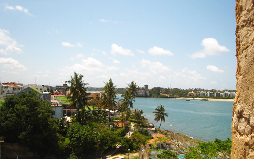

Out of
In
Aug. and Sept. 2012 I had my first trip to Africa. Here are some
pictures of my days in Africa.
South Africa
The South Africa trip happened when Reza
Najafimanesh offered us to join a trip that Ali Tabatabaii, another
friend who lives in Johannesburg, has arranged for some family and
freinds. We were happy to join, as I and Shahrzad were thinking of
going to Africa for some time. |
We
were 23 people, friends and relatives of Reza. Most of us flew from
Doha to Johannesburg. We arrived in OR Tambo International airport.
This is a picture of the group in the airport. Left to right they are:
Maryam, Shaghayegh, Ali, another Ali, Reza, yet another Ali, Farid,
Fereshteh, Abbas, Nika, Ali's sister, Ali again, another Maryam, Giti,
Sheri, Faranak, Mrs. Morshedi, Farshad, Mohit, Firouzeh, Mr. Morshedi,
Aida's mother, Aida.
|
|
| We
stayed at Cabanas
hotel in Sun City. Sun City is not a city, really. It is a touristic
resort with many hotels and casinos. The good thing about it is that it
is very close to the Pilanesberg National Park. |
Early in the morning, in
chilly weather, we went on a 'safari' in the Pilanesberg National Park.
This large African White Rhinoceros was first to greet us. Like many
animals in Africa, the rhino didn't seem to be bothered by the car.
|
|
|
Two South Africa giraffes (Giraffa camelopardalis giraffa)
in Pilanesberg National Park. These giraffes look paler than their
relatives in the northern areas of Africa. Note how good they can be
camouflaged behind tree branches.
|
A typical Safari car which took us to Pilanesberg Park.
These cars are modified and have raised back seats for better viewing.
I am not the driver, the steering wheel is on the other side.
|

|
|
|
We
visited a demonstration village tour of various tribes of South Africa.
here I am eating pap, a kind of liquid ugari, which is made from maze.
|
A man in Zulu warrior attire is greeting us to their village.
|
|
|
|
Shahrzad was happy to have this python put on her shoulders,
at first. Later she tried to get rid of it.
|
|
|
After Johannesburg we flew to Cape Town. Cape Town is
located between two bays and one magnificent mountain, called the Table
Mountain. This is a picture from atop that mountain showing northern
parts of the city, bay and the Table mountain telecabin.
|
In Knysna we visited the Knysna Elephant Park. Here some
orphan or abounded baby elephants are kept. They are trained to
take vegetables and fruits from tourists. African elephants are known
to be hard, or impossible, to tame, but these looked non-threatening.
|
|
African Penguin (Spheniscus demersus) lives only at
South African shores. These cute little birds have a sound very similar
to a donkey's bray.
|
|
Kenya
After
South Africa we parted with our group and went to Kenya.
|
Nairobi
In Nairobi we met my old time friend Hamed and his family.
They have been living and working there for so many years. This is
their terrace under an African fig tree, frequented at times by baboons.
|
|
|
|
We
visited a 'hotel' in downtown Nairobi, where Abu Bakr and his friends
present their recent imports of African traditional artifacts. Wooden
sculptures, known as 'colonial style', are seen in this picture.
|
|
With Hamed at his office in Nairobi. His collection of
African swords and daggers can be seen. He kindly spent time with us,
despite his busy schedule.
|
|
|
Mombasa
I decided
to take time off from our Nairobi trip and make a short trip to Mombasa
and Zanzibar. These two towns have been destinations for Persian, Arab
and Indian dhow captain/traders for centuries.
|
Fort Jesus was built by the Portuguese and later was a prison. Today it is a museum.
|
|

|
Old port of Mombasa, as seen from the Fort Jesus. Here my
captain friends from Bandar Kong have anchored their boums many times. |
|
Old Town of Mombasa has many interesting
architectural beauties. The balcony is a characteristic element of
Mombasa houses.
|
|
|
Another view of an ally in old town of Mombasa. A Tuc Tuc is
seen, as well as schoolgirls in Islamic dress.
|
|
Entrance to the old port of Mombasa from the Indian Ocean. All
dhows used to pass this passage to reach the old port.
|
|
Tanzania
Although
technically we visited Tanzania, but actually we only went to Zanzibar.
I wanted to meet Prof. Abdul Sheriff who had written books about the
Indian Ocean dhow trade. He was kind enough to book a nice local
B&B in the old town of Zanzibar.
|
|
House of Fatima which was our hotel in Zanzibar. This is a three-story traditional Zanzibari house. The ceiling beams are buriti,
or mangrove poles. Such poles were the main exporting item that Persian
sailors carried from Zanzibar and Rufigi river delta to the Persian
Gulf.
|
Ali
talking with Dr. Abdul Sheriff. He was the head and the curator of the
'House of Wonders' and supervised the construction of a model of Mtepe,
the traditional East African dhow. Dr. Sheriff also gave me copies of
documents regarding the Iranian dhows which visited the Mombasa and
Zanzibar ports. I am very grateful for his help and the time he spent
with us.
|
|
|
|
This is a Persian inscription which appears on two old cannons in front of
the House of Wonders. The cannons are Portuguese and apparently were
seized by the Iranians in the Perso-Portuguese wars during the reign of
Safavid Shah Abbas. It reads:
یا الله
در زمان سلطنت روزافزون پادشاه زمین و زمان شاه عباس صفوی موافق سنه احدی
و ثلاثین و الف هجری ابن الله وردی خان غلام با اخلاص شاه دین پناه امام قلی
خان بیگرلربیگی فارس و لار و کوه گیلویه و بحرین قلعه هرموز رامفتوح ساخته
این توپ را بدست آورد
یا محمد یا علی
|
Kedichi bath, near Zanzibar. This is one the Persian baths of Zanzibar and has a distinct Persian bath architecture.
|
|
A Persian verse on the wall inside of Kedichi bath. It reads:
خوشست باده گلرنگ با کباب شکاری
ز دست ساقی گلچهره در کنار بحاری
|
|
Back in Kenya
After the short trip to Mombasa and Zanzibar, we were
back in Keny. This time we went on a typical African safari in the vast
Masai Mara region of western Kenya.
|
Masai Mara
Masai
Mara was the highlight of our African trip.
Wildlife films on TV can not give you the smell and splendor of the
grasslands. Our guide was Mari, a Masai himself and he was very good at
finding good picture taking opportunities. He is wearing the
traditional red outfit of the Masai men.
|
|
T
|
Two female lions caught a zebra
right
before our eyes. They didn't seem to care about our car at all.
While the first one was busy suffocating the poor zebra with its
powerful jaws, the other started tearing the prey.
|
|
|
This crocodile was swiming right in front of our
tents in the river Talek.
|
A rather large contingent of African elephants
passing in front of our car.
|
|


Copyright
© Ali Parsa 1998-2012
All rights reserved